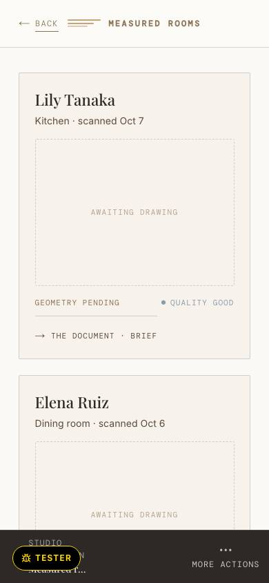
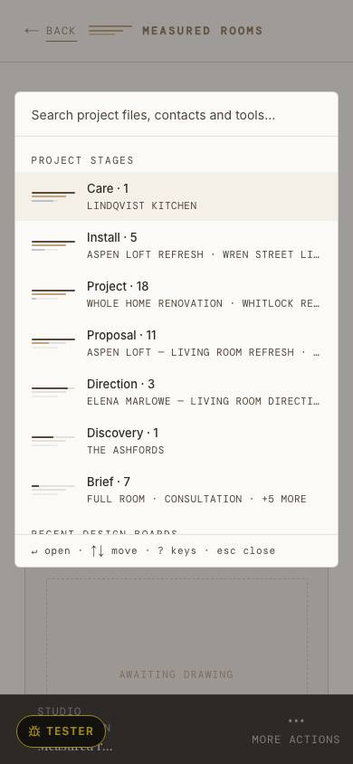

Scanned Tue 29 Sep
Dining room
12′ 10″ × 15′ 1″ · ceiling 9′ 2″
Quality good

Illustrative fixture · Hartwell Studio is invented · this screenshot shows the local walk seed (SQ-800), not Hartwell
Pell Court Dining · Rosalind Fairweather
Scanned Tue 29 Sep
12′ 10″ × 15′ 1″ · ceiling 9′ 2″
Quality good
Marks at rest: today not counted (WALK §3) · proposed measured at render
Illustrative fixture · Hartwell Studio is invented

Illustrative fixture · Hartwell Studio is invented · this screenshot shows the local walk seed (SQ-800), not Hartwell
Monday 12 October · Today
Project · Leah’s
Invoice INV‑2026‑0721 is $3,800 overdue, due Monday 28 September.
Fenmoor Joinery has not answered PO‑HD‑0412 ($11,450) in 12 days.
Proposal · Leah’s · Yesterday
Declined yesterday: “The sofa is over budget; can we see a second option under $6,000?”
Project · Jordan’s
Handed to Jordan by Leah, Saturday 10 October · Read the note
Ninebark Lighting has not answered PO‑MS‑0388 ($2,180) in 4 days. The move is Jordan’s.
Project · Leah’s · 2 hours ago
Deposit of $9,200 paid at 6:10 this morning; release both orders to the makers.
Leah’s
Also yours
Brief
Web inquiry: a living room, budget $40–60k. “We just moved in and the living room is empty except for a piano.”
Proposal
The Ashbys signed the proposal ($48,200) on Friday, before a project exists.
With others
Direction
Fabric samples, not yet opened · waiting on Mae Halloran
Direction
Two palettes · waiting on Hal and Dana Whitfield
Install
Calloway & Brandt Upholstery delivering to Marguerite Osei · waiting on the maker
Coming back
Install
Balance to Calloway & Brandt ($3,400) on hold, waiting on the Chens’ bench decision
Proposal
Declined, postponing until spring; the Okafors are travelling, call after the 18th
No current alert
Jordan’s
With Jordan
Proposal
Priya and Dev Anand signed the design services agreement ($6,500) on Saturday. The move is Jordan’s.
Find anything
Jobs
Project
Nora and Sam Holloway · Leah’s · the den, with the built-in bench and the bookcase wall
Direction
Mae Halloran · Leah’s · fabric samples with her since Tuesday 6 October
People
Client
Holloway Den · (415) 555-0118
Client
Holloway Den
Acts
Act
Opens the inquiry sheet over this page.
Marks at rest: today 30 · 12 · 9 · 18 · proposed measured at render
Illustrative fixture · Hartwell Studio is invented